大倉公園と管理棟・休憩棟の 3D モデル（Opus 版）
ワタナベエイジ展「Morning Monsters / W Eiji」（2025）の会場だった大倉公園と、管理棟・休憩棟の推定復元を、先に公開した版とは別に組み直したものです。記録写真の撮影位置を写真の中の建具・作品の角から解き（写真 29 枚）、その視点から描いた画面と写真を照らし合わせて、建物の寸法・建具・作品の配置を合わせ込みました。公園と二棟を一つのモデルにまとめ、ブラウザでは公園から二棟の中まで一続きに歩けます。寸法・間取り・庭の配置には推定が含まれ、実測図に基づくものではありません。検討のために期間を限って置いています。
2026 年 9 月 24 日の公開：写真と描画の照合は、撮影位置の誤差が 10 画素以内の写真が休憩棟 10 枚・管理棟 11 枚・公園 6 枚です。茅葺門の間口と暖簾、奥の門の柱と礎石、管理棟の間取り（研究ノートの広間の壁・洋室の天井・床の間まわり）は、複数の写真から解いた値に合わせました。管理棟の《変身立体（星丸）》は、手前からは円に、鏡の中では六芒星に見えるよう錯視の形に組み、ブラウザでも鏡に映ります。木と葉は記録写真の樹種（クロマツ、常緑樹、紅葉したカエデ）と葉の形に合わせ、生垣・植え込み・草むらも葉で組みました。トイレと東屋は外観の資料がないため、記録写真に写る建物と一般的な和風の作りからの推定です。
ブラウザで歩く
画面の構成は先の版と同じです。「棟」で公園・休憩棟・管理棟を選ぶとその入口へ移り、「視点」でその棟の鑑賞位置へ移れます。ドラッグで見回し、WASD・矢印キーか画面右下の矢印で移動し、ホイール（トラックパッドのピンチ）か ＋ − で拡大・縮小します。右上の地図を押すとその場所へ移ります。左上の札に近くの作品を出し、「作品について」で作品名・作者・場所を見られます。下の帯の「案内」で画面に重なる表示を隠し、「順路」で棟ごとの順路を自動で歩き、「光」で昼・夕方・曇りを切り替えます。休憩棟の樽の間では梯子を上って《空の夢／空の上》の中を覗けます。合計約 74MB のデータを読むので、表示まで少し待ちます。パソコンの Chrome で確認しています。
確認画像
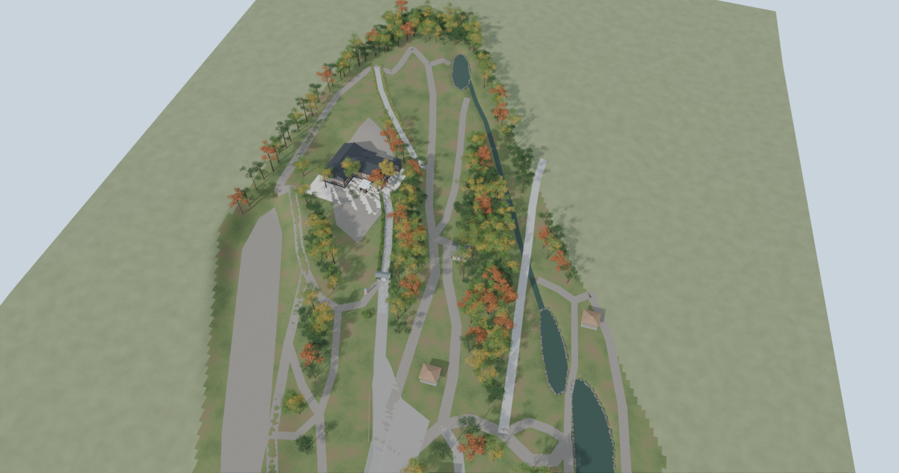
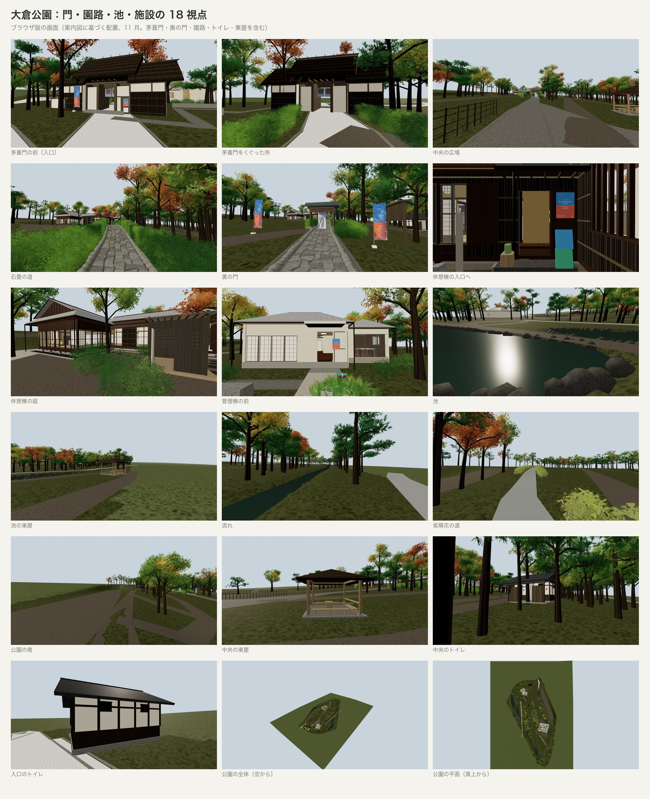
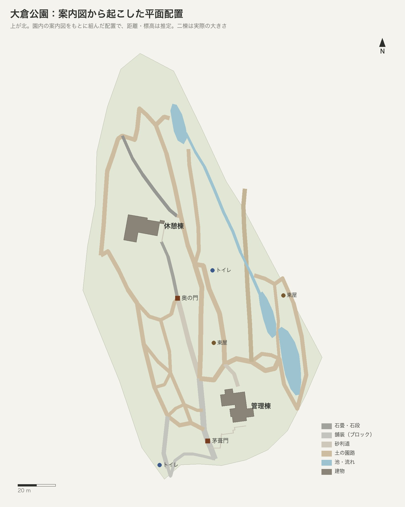
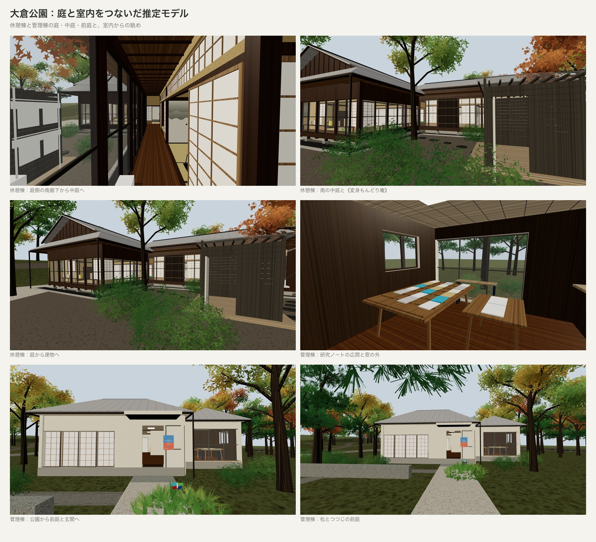
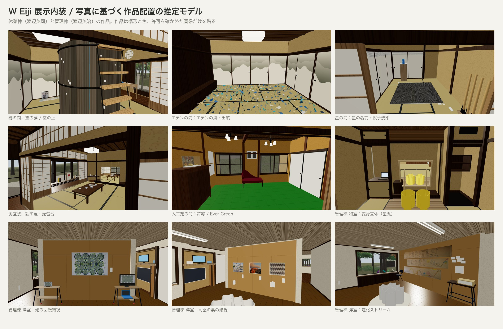
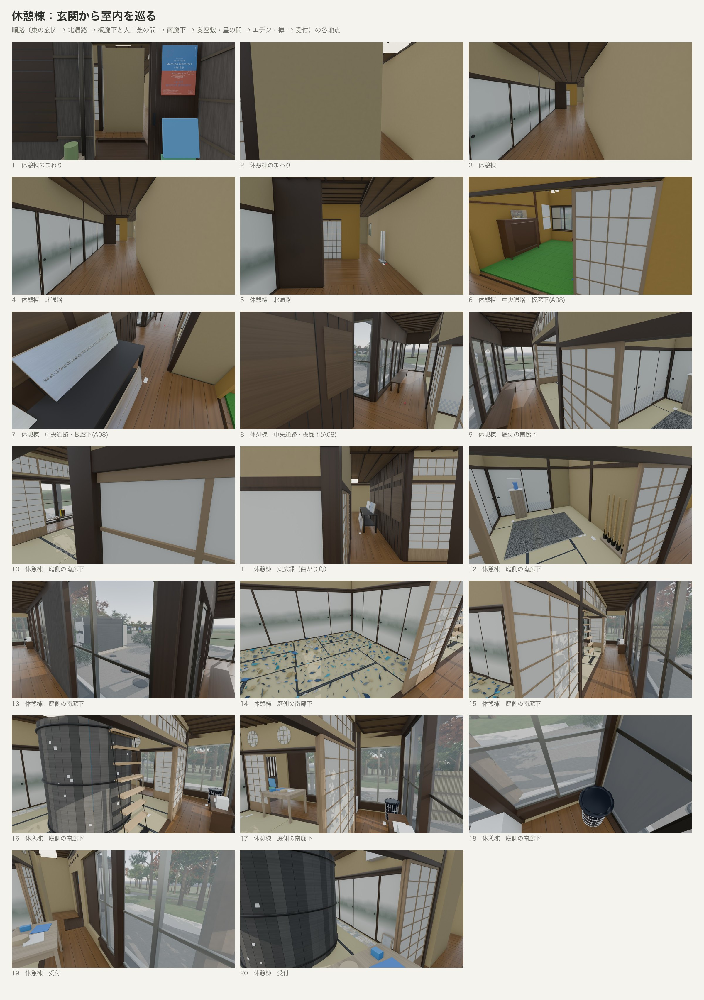
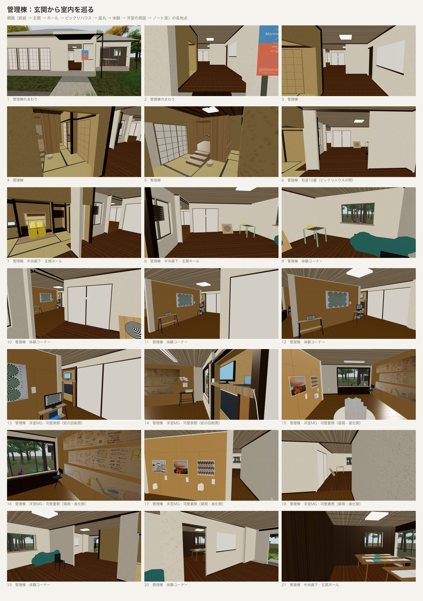
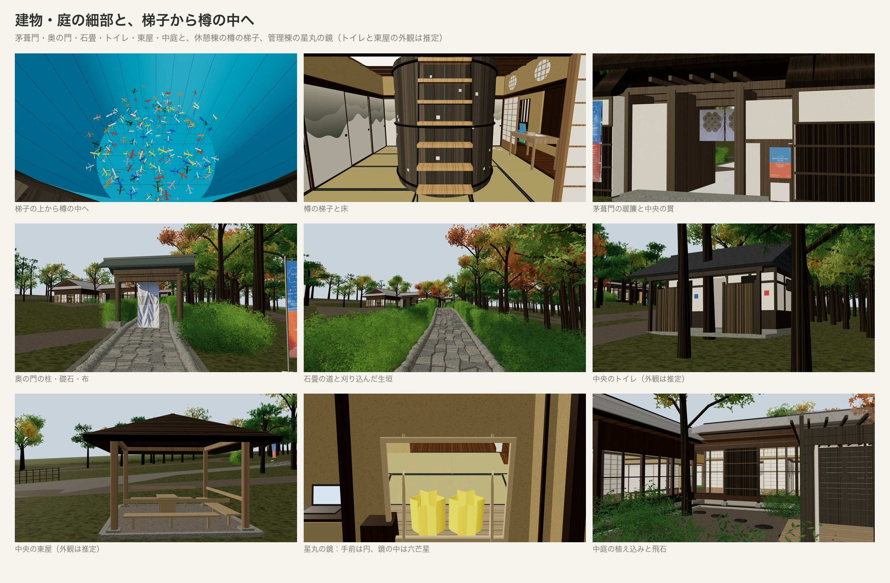
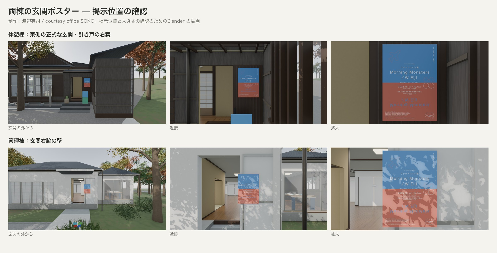
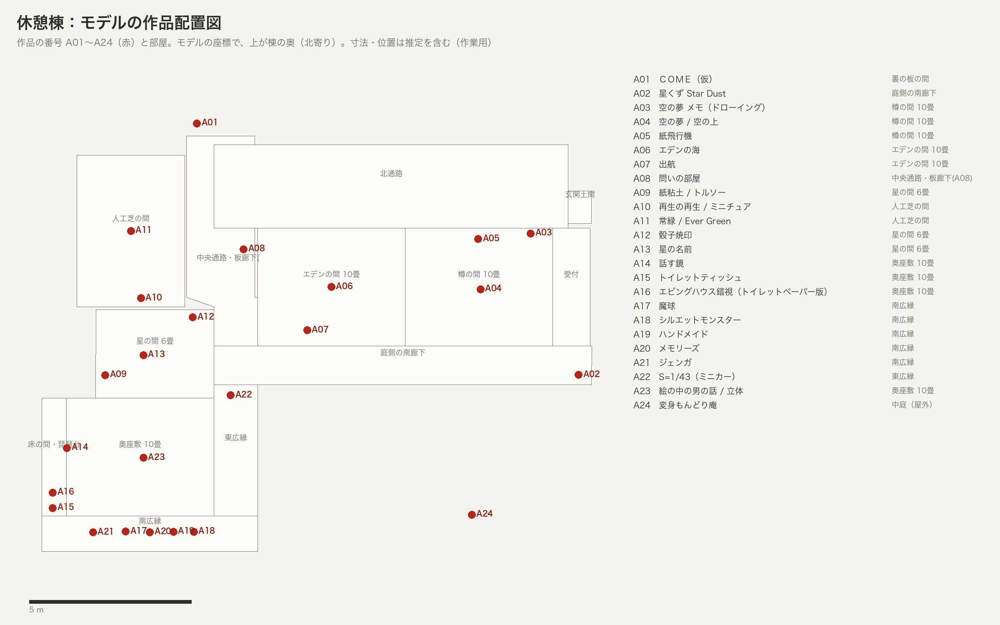
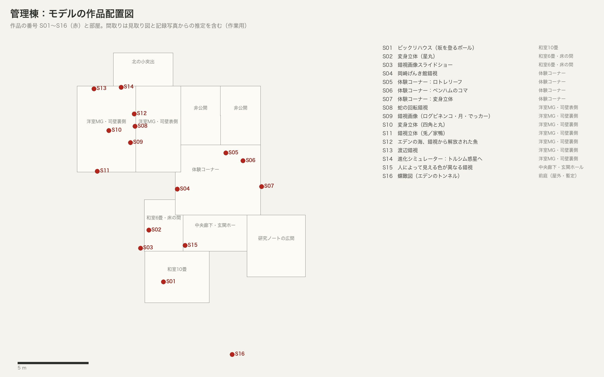
記録
- README（開き方と操作、組み立てと検査の手順）
- PLAN（根拠資料、推定の範囲、実装の記録、制作者に確かめたいこと）
- PROGRESS（作業の進み具合、既知の問題）
- 照合表（記録写真 29 枚と描画の照合の数値。比較画像は含めていません）
作品は概形と色で表し、錯視図版や作品写真は許可を確かめたものだけを貼っています：玄関のポスター（制作：渡辺英司 / courtesy office SONO）、管理棟の《蛇の回転錯視》のパネル（Rotating snakes, 2003：北岡明佳。展示写真からの転写）、《エデンの海、錯視から解放された魚》の試作プリント（写真提供：渡辺英治／錯視画像：北岡明佳）、進化ストリームの 3 図（図：渡辺英治／撮影：青木兼治）、月の錯視（元写真の撮影者は未確認）とログビネンコ錯視（A. Logvinenko の図）のパネル（展示写真からの転写）、休憩棟の作品の写真転写 19 面（作品：渡辺英司／記録写真：青木兼治。作品写真の一部は撮影者未確認）、公園の茅葺門の暖簾 2 枚・奥の門の布 2 幅・のぼり（展示写真からの転写）。襖絵などは写真を貼らず、模様で表しています。記録写真は撮影位置の推定と照合にだけ使い、掲載許諾の確認前のため、写真そのものと写真との比較画像は含めていません（ブラウザ版の「記録写真を重ねる」機能も、この公開版では外しています）。